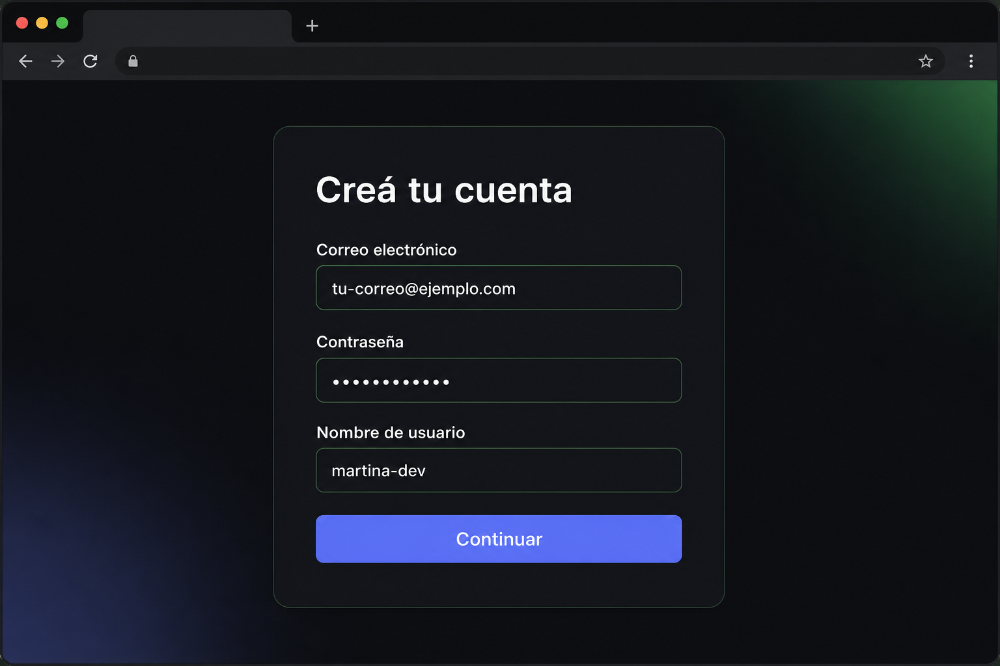
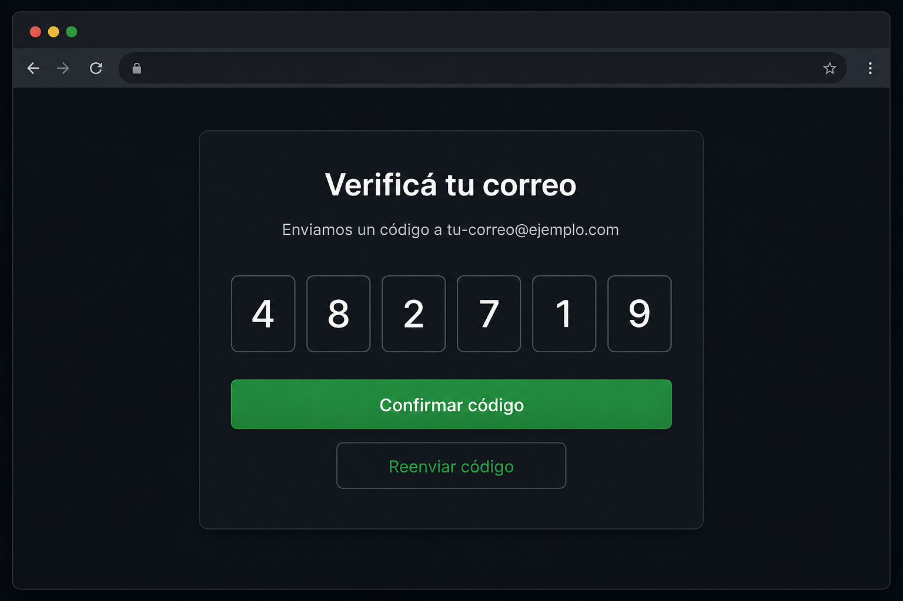
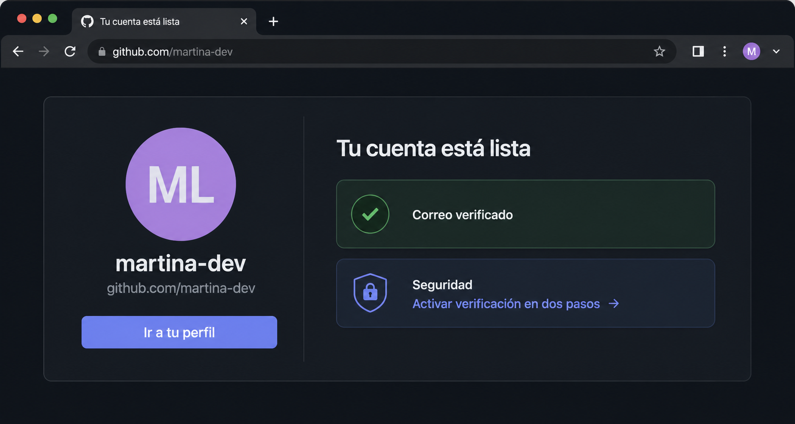

CREACIÓN DE LA CUENTA
Completá el registro
Entrá en github.com/signup ↗. El diseño puede cambiar, pero vas a necesitar estos elementos:
Usá una dirección activa que puedas verificar y recuperar.
Creá una contraseña larga y única. Podés guardarla en un administrador de contraseñas.
Será público y formará parte de tus enlaces. Elegí uno fácil de reconocer.
Podés omitir comunicaciones promocionales o personalizaciones opcionales.

El nombre de usuario se verá en tus entregas. Evitá incluir documento, fecha de nacimiento, teléfono u otros datos personales.
CONFIRMACIÓN DE IDENTIDAD
Verificá tu correo
GitHub enviará un mensaje a la dirección registrada. Abrilo, copiá el código o seguí el enlace de confirmación y regresá al navegador.

El código de la imagen es ficticio. Usá únicamente el que llegue a tu propio correo y no lo compartas.
ENLACE PÚBLICO
Confirmá que la cuenta esté lista
Una vez verificado el correo, abrí tu perfil desde el menú de usuario. La dirección tendrá una forma similar a github.com/TU-USUARIO.
Escribí tu usuario de GitHub
No ingreses el correo ni la contraseña.
https://github.com/TU-USUARIOUsá solamente letras, números y guiones simples.

Tu perfil puede estar vacío. No necesitás agregar foto, biografía, ubicación ni redes sociales para completar la cursada.
SEGUNDA COMPROBACIÓN
Protegé el acceso
Si GitHub ofrece configurar verificación en dos pasos, es recomendable activarla. Este mecanismo solicita una segunda comprobación además de la contraseña.
Una contraseña filtrada no alcanzará para entrar a la cuenta.
Conservá los códigos de recuperación en un lugar privado y accesible.
Ninguna entrega debe contener contraseñas, códigos o capturas de seguridad.
Regla simple: docentes y compañeros nunca necesitan tu contraseña, código de verificación ni código de recuperación.
AUTORÍA DE LOS COMMITS
Relacioná el correo con Git
El correo configurado en Git conviene que sea uno de los correos agregados y verificados en GitHub. Así la plataforma puede asociar los commits con tu cuenta.
git config --global user.emailObserva cambios, prepara archivos y crea puntos guardados llamados commits.
Recibe los commits para respaldar el proyecto y compartir el enlace de entrega.
Confirmá que tu cuenta está lista
Ya podés continuar con la publicación de tu primera entrega.